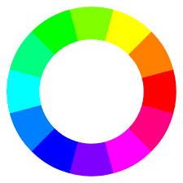

Cores do Círculo Cromático
Hierarquia
- Cores primárias: Vermelho, Azul e Amarelo
- Secundárias: Verde, Violeta e Laranja
- Terciárias: Mistura das primárias com as secundárias.

Paleta de Cores
É o grupo de cores que geram o design do espaço
Contraste
Cores Extremamente opostas no Círculo Cromático.
Cores Análogas
Cores imediatamente vizinhas no Círculo de Cores.
Formas de distribuir o contraste e analogas:
- Quadráticas
- Tetrades
- Triades
- Alternadas
- Monocromáticas